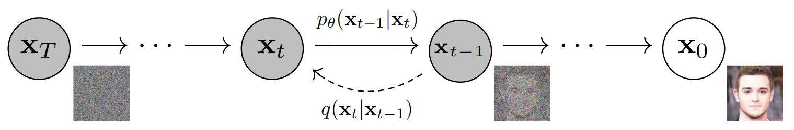

扩散模型——DDPM¶
综述¶
会议时间：NIPS2020
介绍¶
扩散模型主要包括前向过程（不断往输入数据中添加噪声）和后向过程（对加噪图像执行去噪、恢复目的）。

前向过程
前向过程不断添加噪声，随着采样步的增加，噪声占比不断增加，
$$
\alpha_t = 1-\beta_t\\
x_t=\sqrt{\overline {a_t}}x_0+\sqrt{1-\overline{a_t}}z_t
$$
其中，\beta随着采样步的增大而增大，a随着时间步的增大而减小，\overline{a_t}等于a_ta_{t-1}a_{t-2}\dots a_0，\overline {a_t}越大，则原图数据占比越大，反之噪声占比越大，z_t表示高斯噪声。
反向过程
反向过程为消除噪声，具体步骤为：
- 根据每个采样步t和采样图像x_t，预测高斯噪声z_t，之后计算图像分布的均值\mu
\mu_t=\frac{1}{\sqrt{at}}(x_t-\frac{1-\alpha_t}{\sqrt{1-\overline \alpha_t}}z_t)
- 计算图像分布的方差\sigma，标准的扩散模型中，方差是固定的数值：
\frac{1}{\sigma^2}=\frac{\alpha_t}{\beta_t}+\frac{1}{1-\overline \alpha_{t-1}}
后续的改进版本中，方差通过模型的预测得到。
- 得到q(x_{t-1}|x_t,x_0)（高斯分布情况），根据重参数技巧得到x_{t-1}
x_{t-1}=\mu_t + \sigma \odot \epsilon,\epsilon \in N(0,1)
其中\epsilon相当于噪声。
注：
- 所添加的噪声占比与时间步t有关，因此神经网络主要根据输入的采样图x_t和采样步t来预测噪声z_t，网络的输入通常是两组数据，先将时间步t做编码操作，将离散的数据变为连续的向量，之后再与图像特征融合，用于预测噪声。其中，神经网络结构主要由U-Net+Attention构成，网络的训练主要由网络的输出和噪声源之间的MSE损失构成；
- 推理阶段，将采样图x_t与采样步t迭代传入网络中，重复T次，其中t从T-1降低为0，最终生成一张图像。
未完待续，还有一部分原理细节需要再理解一下。。
参考链接：https://zhuanlan.zhihu.com/p/572770333
源码笔记¶
总体流程¶
# 总的采样次数，也就是最后实现的过程中，噪声经过T次恢复会生成图片
T = 300
betas = linear_beta_schedule(timesteps=T)
# 定义α和β，其中α用于控制噪声和图像的占比，α越大则原图占比越大，α越小则噪声占比越大
# 随着采样步t增大，beta越来越大，alpha越来越小
alphas = 1. - betas
# 间断生成噪声超参数，torch.cumprod用于元素累乘，生成的数据为[a1,a1*a2,a1*a2*a3,……]
alphas_cumprod = torch.cumprod(alphas, axis=0)
alphas_cumprod_prev = F.pad(alphas_cumprod[:-1], (1, 0), value=1.0)
# 根下ai分之1，用于计算采样过程中的xt-1，具体见论文
sqrt_recip_alphas = torch.sqrt(1.0 / alphas)
# sqrt(累乘at)
sqrt_alphas_cumprod = torch.sqrt(alphas_cumprod)
# sqrt(1-累乘at)，minus减，
sqrt_one_minus_alphas_cumprod = torch.sqrt(1. - alphas_cumprod)
# 用于后续再结合均值来计算xt
posterior_variance = betas * (1. - alphas_cumprod_prev) / (1. - alphas_cumprod)
model = SimpleUnet()
BATCH_SIZE = 2
device = "cuda" if torch.cuda.is_available() else "cpu"
model.to(device)
epochs = 100 # Try more!
t = torch.randint(0, T, (BATCH_SIZE,), device=device).long()
img = torch.randn((2, 3, 224, 224))
# 计算损失，根据损失来反向传播
loss = get_loss(model, img, t)
# 测试阶段，生成图像
sample_plot_image(img_size=224)
训练过程¶
def linear_beta_schedule(timesteps, start=0.0001, end=0.02):
return torch.linspace(start, end, timesteps)
def forward_diffusion_sample(x_0, t, device="cpu"):
"""
Takes an image and a timestep as input and
returns the noisy version of it
"""
noise = torch.randn_like(x_0)
sqrt_alphas_cumprod_t = get_index_from_list(sqrt_alphas_cumprod, t, x_0.shape)
sqrt_one_minus_alphas_cumprod_t = get_index_from_list(
sqrt_one_minus_alphas_cumprod, t, x_0.shape
)
# mean + variance
# 根据公式来添加噪声
return sqrt_alphas_cumprod_t.to(device) * x_0.to(device) \
+ sqrt_one_minus_alphas_cumprod_t.to(device) * noise.to(device), noise.to(device)
def get_index_from_list(vals, t, x_shape):
"""
Returns a specific index t of a passed list of values vals
while considering the batch dimension.
"""
batch_size = t.shape[0]
out = vals.gather(-1, t.cpu())
return out.reshape(batch_size, *((1,) * (len(x_shape) - 1))).to(t.device)
def get_loss(model, x_0, t):
# 对图像按步添加噪声，步数t越大，则噪声z占比越大，并且返回噪声z
x_noisy, noise = forward_diffusion_sample(x_0, t, device)
# 核心目的，根据时间步t，和添加噪声后的图像，预测出噪声源z
# 这里并不是直接预测添加了多少噪声，因为所添加的噪声与噪声源z和时间步t有关
noise_pred = model(x_noisy, t)
return F.l1_loss(noise, noise_pred)
测试过程¶
@torch.no_grad()
def sample_timestep(x, t):
"""
Calls the model to predict the noise in the image and returns
the denoised image.
Applies noise to this image, if we are not in the last step yet.
"""
betas_t = get_index_from_list(betas, t, x.shape)
sqrt_one_minus_alphas_cumprod_t = get_index_from_list(
sqrt_one_minus_alphas_cumprod, t, x.shape
)
sqrt_recip_alphas_t = get_index_from_list(sqrt_recip_alphas, t, x.shape)
# Call model (current image - noise prediction)
# 利用公式计算均值
model_mean = sqrt_recip_alphas_t * (
x - betas_t * model(x, t) / sqrt_one_minus_alphas_cumprod_t
)
posterior_variance_t = get_index_from_list(posterior_variance, t, x.shape)
if t == 0:
# As pointed out by Luis Pereira (see YouTube comment)
# The t's are offset from the t's in the paper
return model_mean
else:
noise = torch.randn_like(x)
# 重采样技巧，相当于图像还原的过程，均值+sqrt(方差)*噪声
return model_mean + torch.sqrt(posterior_variance_t) * noise
@torch.no_grad()
def sample_plot_image(img_size=224):
# 从T开始往前迭代，也即从纯噪声开始生成
img = torch.randn((1, 3, img_size, img_size), device=device)
for i in range(0, T)[::-1]:
t = torch.full((1,), i, device=device, dtype=torch.long)
img = sample_timestep(img, t)
# Edit: This is to maintain the natural range of the distribution
img = torch.clamp(img, -1.0, 1.0)
网络结构¶
这只是一个简单的案例，后期可以根据任务具体形式来设置网络形式。但是有一个核心点，在前向传播过程中，网络同时接收图像和采样步t，先要对采样步t做编码，将离散的数据变为连续的向量数据，之后将图像特征与采样步特征做融合，在每次下采样以及上采样过程中，采样步特征都要和编码、解码特征做融合操作。
from torch import nn
import math
import torch
class Block(nn.Module):
def __init__(self, in_ch, out_ch, time_emb_dim, up=False):
super().__init__()
self.time_mlp = nn.Linear(time_emb_dim, out_ch)
if up:
self.conv1 = nn.Conv2d(2 * in_ch, out_ch, 3, padding=1)
self.transform = nn.ConvTranspose2d(out_ch, out_ch, 4, 2, 1)
else:
self.conv1 = nn.Conv2d(in_ch, out_ch, 3, padding=1)
self.transform = nn.Conv2d(out_ch, out_ch, 4, 2, 1)
self.conv2 = nn.Conv2d(out_ch, out_ch, 3, padding=1)
self.bnorm1 = nn.BatchNorm2d(out_ch)
self.bnorm2 = nn.BatchNorm2d(out_ch)
self.relu = nn.ReLU()
def forward(self, x, t, ):
# First Conv
h = self.bnorm1(self.relu(self.conv1(x)))
# Time embedding
time_emb = self.relu(self.time_mlp(t))
# Extend last 2 dimensions
time_emb = time_emb[(...,) + (None,) * 2]
# Add time channel
# 图像特征与采样步编码向量做加法
h = h + time_emb
# Second Conv
h = self.bnorm2(self.relu(self.conv2(h)))
# Down or Upsample
return self.transform(h)
class SinusoidalPositionEmbeddings(nn.Module):
def __init__(self, dim):
super().__init__()
self.dim = dim
def forward(self, time):
device = time.device
half_dim = self.dim // 2
embeddings = math.log(10000) / (half_dim - 1)
embeddings = torch.exp(torch.arange(half_dim, device=device) * -embeddings)
embeddings = time[:, None] * embeddings[None, :]
embeddings = torch.cat((embeddings.sin(), embeddings.cos()), dim=-1)
# TODO: Double check the ordering here
return embeddings
class SimpleUnet(nn.Module):
"""
A simplified variant of the Unet architecture.
"""
def __init__(self):
super().__init__()
image_channels = 3
down_channels = (64, 128, 256, 512, 1024)
up_channels = (1024, 512, 256, 128, 64)
out_dim = 3
time_emb_dim = 32
# Time embedding
self.time_mlp = nn.Sequential(
SinusoidalPositionEmbeddings(time_emb_dim),
nn.Linear(time_emb_dim, time_emb_dim),
nn.ReLU()
)
# Initial projection
self.conv0 = nn.Conv2d(image_channels, down_channels[0], 3, padding=1)
# Downsample
self.downs = nn.ModuleList([Block(down_channels[i], down_channels[i + 1], \
time_emb_dim) \
for i in range(len(down_channels) - 1)])
# Upsample
self.ups = nn.ModuleList([Block(up_channels[i], up_channels[i + 1], \
time_emb_dim, up=True) \
for i in range(len(up_channels) - 1)])
# Edit: Corrected a bug found by Jakub C (see YouTube comment)
self.output = nn.Conv2d(up_channels[-1], out_dim, 1)
def forward(self, x, timestep):
# Embedd time
# 对采样步编码，将离散的数据编码为连续的向量
t = self.time_mlp(timestep)
# Initial conv
x = self.conv0(x)
# Unet
residual_inputs = []
for down in self.downs:
# 图像特征与采样步编码向量同时传入下采样模块
# 中间有一步加法，相当于做了融合操作（利用广播机制）
x = down(x, t)
residual_inputs.append(x)
for up in self.ups:
residual_x = residual_inputs.pop()
# Add residual x as additional channels
x = torch.cat((x, residual_x), dim=1)
x = up(x, t)
return self.output(x)
注：以上仅是笔者个人见解，若有问题，欢迎指正。